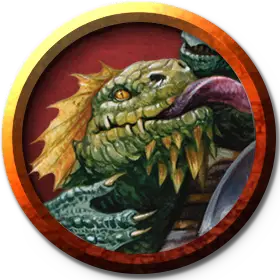

Дрейк-компаньон
Drake Companion
Средний Дракон

Класс Доспеха 14 + БМ следопыта (природный доспех)
Хиты 5 + ваш пятикратный уровень следопыта (количество костей хитов дрейка [к10] равно уровню следопыта)
Скорость 40 футов, летая 40 футов (если не осёдлан)
| мод | спас | ||
|---|---|---|---|
| СИЛ | 16 | +3 | +3 |
| ЛОВ | 12 | +1 | +1 |
| ТЕЛ | 15 | +2 | +2 |
| мод | спас | ||
|---|---|---|---|
| ИНТ | 8 | −1 | −1 |
| МДР | 14 | +2 | +2 |
| ХАР | 8 | −1 | −1 |
Иммунитет к урону определяется выбором в особенности «Сущность дракона»
Чувства тёмное зрение 60 футов, пассивное Восприятие 12
Языки Драконий
Опасность —
Особенности
Сущность дракона. Когда вы призываете дрейка, выберите тип урона: кислота, огонь, холод, электричество или яд. Выбор определяет иммунитет к урону дрейка, вид урона особенности «Усиленные удары» и вид дополнительного урона Укуса, также определяет сопротивление, которое получаете вы.
Единство клыков и чешуи. Дрейк может служить для вас скакуном даже если вы Среднего размера или меньше. Пока вы верхом на дрейке, он не может использовать скорость полёта от этого умения Следопыта.
Действия
Укус. Рукопашная атака оружием: +3 + БМ к попаданию, досягаемость 5 футов, одна цель. Попадание: 1к6 + БМ колющего урона + 1к6 того вида урона, который был выбран для особенности «Сущность дракона».
Реакции
Усиленные удары. Когда другое видимое существо в пределах 30 футов от дрейка, попадает атакой оружием, дрейк усиливает эту атаку своей сущностью, из-за чего атака дополнительно наносит 1к6 урона того вида, который был выбран для особенности «Сущность дракона».
Описание
Спутник архетипа следопыта «наездник на дрейке» 7-го уровня.